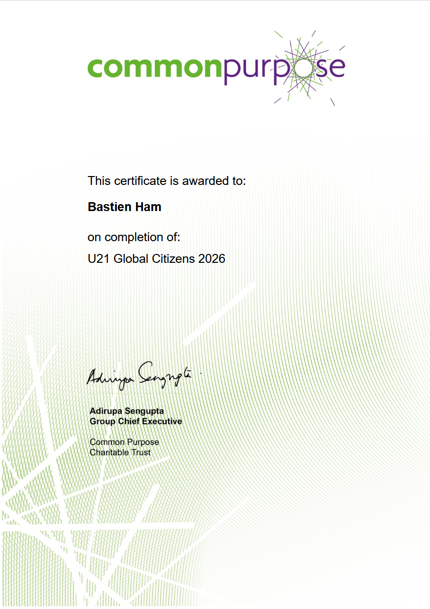

What I experienced
I had the opportunity to be part of an international team brought together by Common Purpose and Universitas 21 — a network of 29 universities across the world — to collaborate with students from every corner of the globe and discuss the UN Sustainable Development Goals.
These exchanges gave me an intersectional perspective on global challenges, highlighting the barriers and levers needed to create real change. At the end of the program, I was awarded the Global Citizen micro-credential.
Throughout the program, I worked on modules, assessments and video sessions, exploring the power of collaborative effort, with a particular focus on SDG 14 — Life Below Water. I came to understand the importance of integrating diverse perspectives, targeting efforts where they are needed most, drawing on real testimonies, and not acting alone.
I'm grateful for the conversations I had and the people I met. I intend to carry this experience into my future international work.

